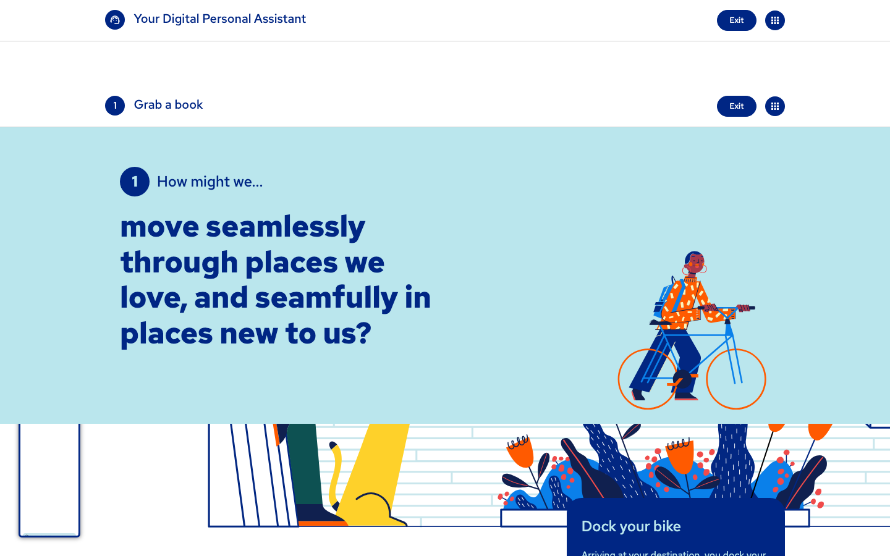
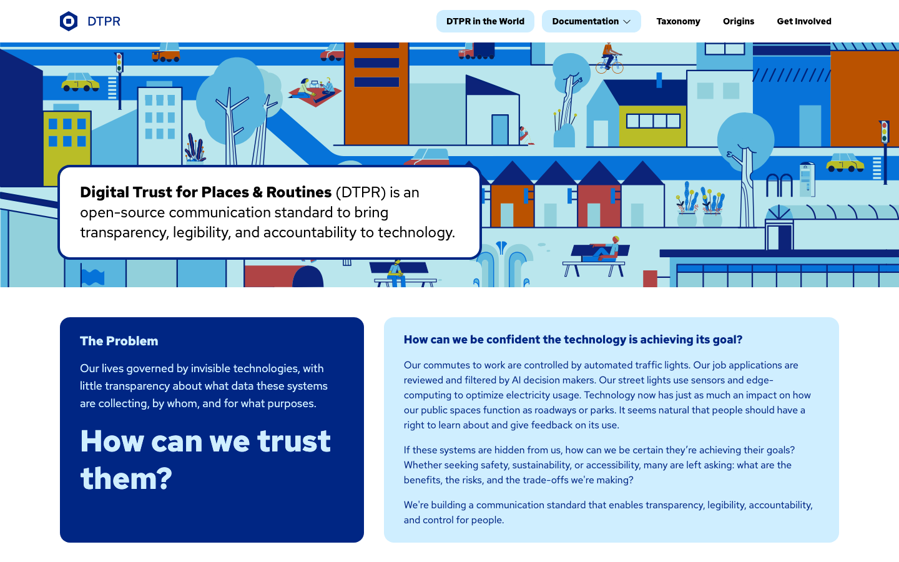
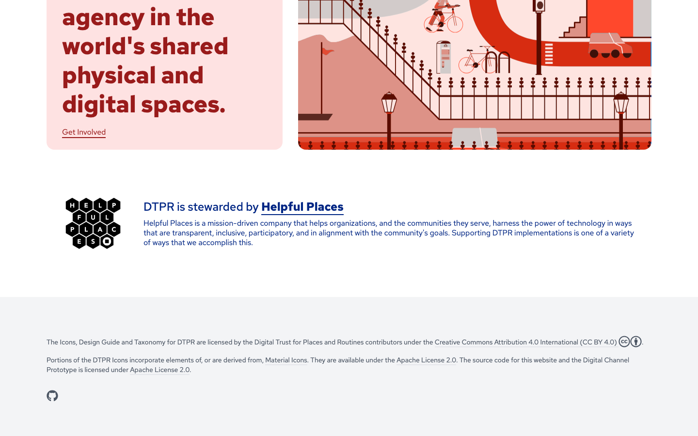
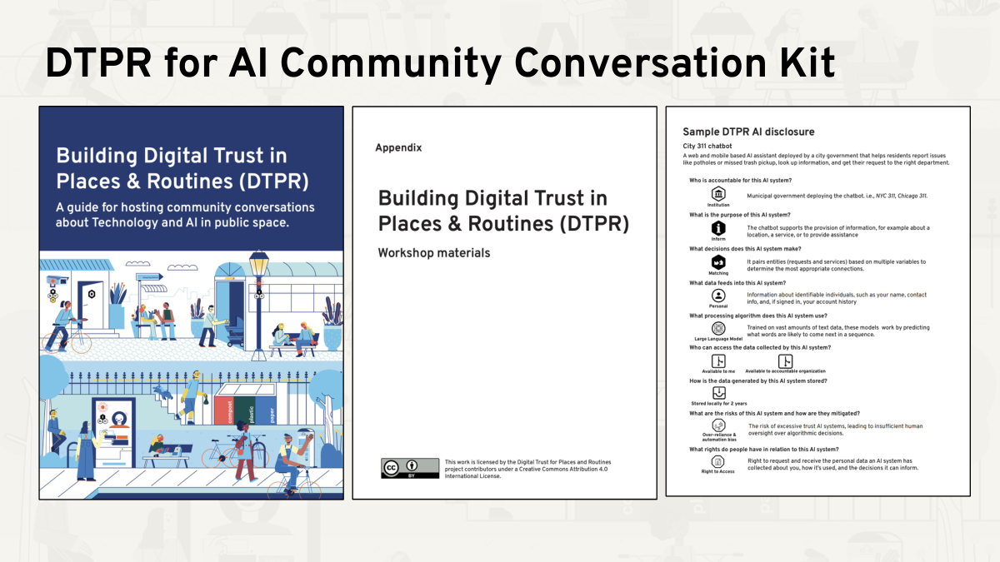
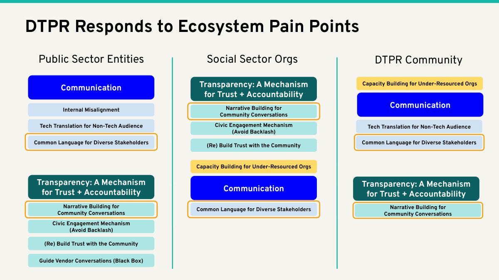
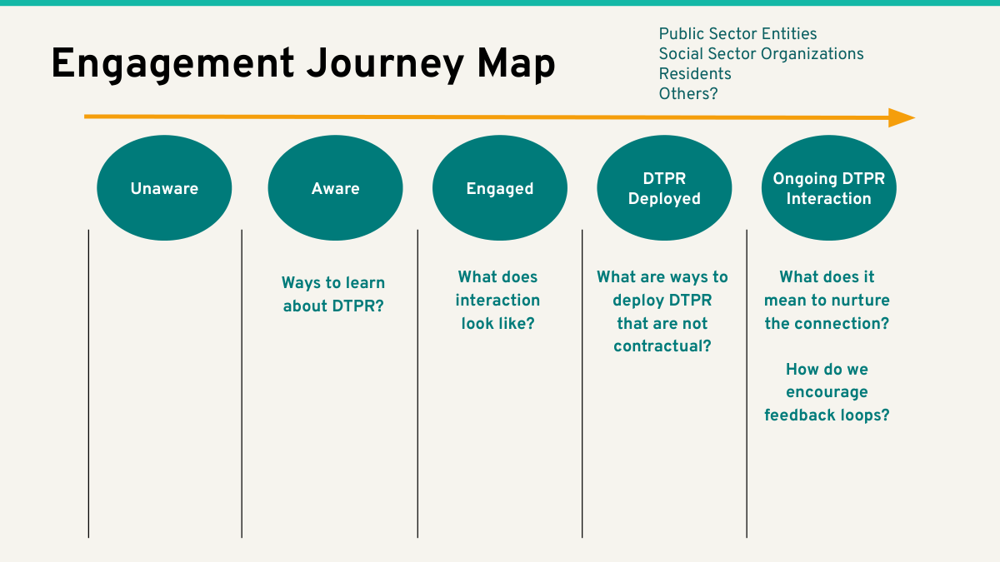

Two illustration systems in tension
The DTPR ecosystem has two competing illustration grammars. The hex-based scenario composition is the standard's own language. The Corporate Memphis flat-illustration cityscape is a Sidewalk Labs / Alphabet holdover that the Assembly Day deck refined into its most complete form. The brand book has to name which goes where.
System 1 · The hex-based scenario composition (vision.dtpr.io)
The standard's own visual language. Tessellated hexagons, scenario cards, data chain. Lives on vision.dtpr.io and (in a compressed form) on dtpr.io in the data-chain illustration.

Defining features
- Hexagons as containers — every scenario is a small cluster of hexagons
- Scenario cards — vertical or horizontal arrangement of hexagons on light backgrounds
- The data chain — Sensor → Transmission → Storage → Access, shown as a connected flow of hexagons
- Character illustrations — flat 2D figures, soft fills, no shadows. Used in the vision prototype to humanize scenarios
- Modular line icons — taxonomy elements drawn as line icons inside the hex frame
System 2 · Corporate Memphis flat-illustration cityscape (dtpr.io + Assembly Day)
The flat-illustration hero on dtpr.io. Bright, geometric, with characters in everyday scenes. This is the Sidewalk Labs / Alphabet holdover. Phase 2 consensus is to deprioritize new work in this style — but it still dominates the dtpr.io homepage, and the Assembly Day deck shows the most refined version of the grammar.
dtpr.io homepage — the live version


Assembly Day — the canonical Corporate Memphis

#002684, teal #0f5153, pale blue, amber accent, and the full Corporate Memphis character palette.
Where each system lives today
| System | Used on | Status | Phase 2 decision |
|---|---|---|---|
| Hex-based scenarios | vision.dtpr.io (primary), dtpr.io data-chain illustration, all taxonomy pages, dtpr.ai quickstart | ACTIVE | Promote. This is the standard's own grammar. |
| Corporate Memphis cityscape | dtpr.io homepage hero, dtpr.io mission card, Assembly Day Community Kit cover | ACTIVE but contested | Deprioritize new work. Phase 2 brief — but the brand book has to decide whether to retire, replace, or repurpose. |
| Vision-era character illustrations | vision.dtpr.io scenario cards only | OBSERVED | Keep. These are different from the Corporate Memphis aesthetic — flat 2D, soft fills, no shadows. |
| Assembly Day "Communication" cards | Assembly Day deck only | INFERRED — not on a live site | Decide. Adopt cobalt #2D2BFF as a fourth brand color, or retire the cards. |
The Assembly Day "Communication" cards — a brand layer that doesn't exist on the web

#2D2BFF "Communication" cards, amber #FFC107 "Capacity Building" cards, teal "Transparency" cards, and pale-teal "Narrative Building" cards. This is a brand layer the web surfaces do not show. INFERRED Assembly Day

Layout grammar — three-layer hierarchy
From meeting-prep-dtpr-audit.md §Q1, applied to fix the figure/ground weakness inherited from vision.dtpr.io:
Atmospheric context, pushed back
Content reads as foreground
Active UI states, CTAs
What the brand book has to say OPEN
The decision is not "Memphis vs. hexagons" — it's "what's the system?"
The two systems serve different purposes:
- The hexagons are the standard. They're how the standard communicates its own content.
- The Corporate Memphis hero is the marketing wrapper. It's the "we are nice, we are approachable" layer.
The Phase 2 brief deprioritized new Memphis work but did not say "remove existing Memphis." Three possible resolutions:
- Keep Memphis as the homepage hero only; everything else is hexagons. (closest to current state)
- Replace Memphis with a hex-based "Scene · Surface · Signal" hero. (recommended in
meeting-prep-dtpr-audit.md§Q1) - Formalize a third "atmosphere" layer — desaturated, ambient, hex-based — that can play the role Memphis currently plays.
Motion and interaction (in the wild)
No documented motion principles exist across the three reference sites. What is observed:
makeshift2026.dtpr.iouses abackground-attachment: fixedparallax on its theme blocks.vision.dtpr.iois a long horizontal-scroll scrollytelling page — a 2020-era design pattern now considered archival.dtpr.iouses no significant motion. The page reads as static.
Codifying motion principles is OPEN — see foundation memo §9, item #6.